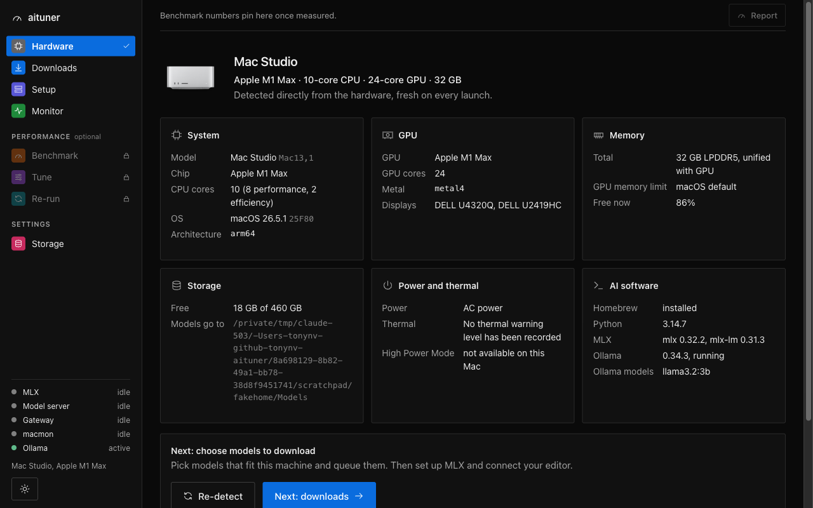
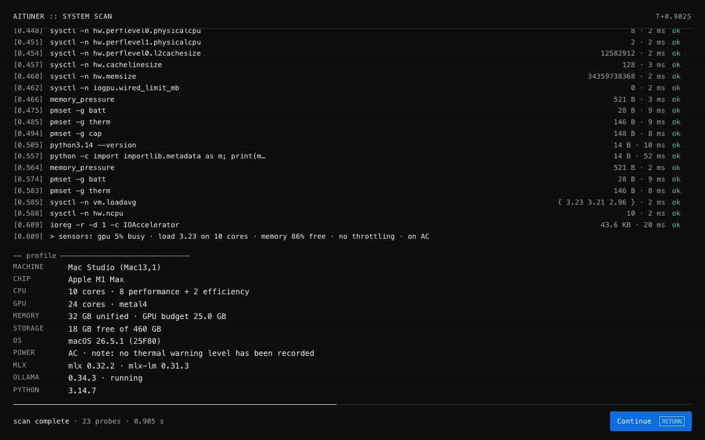
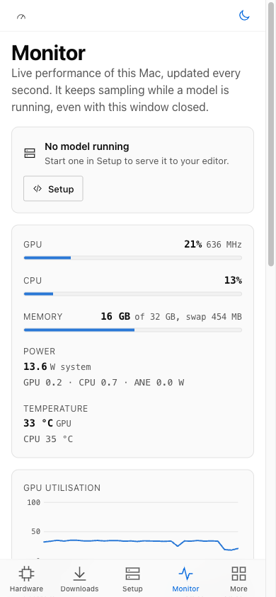
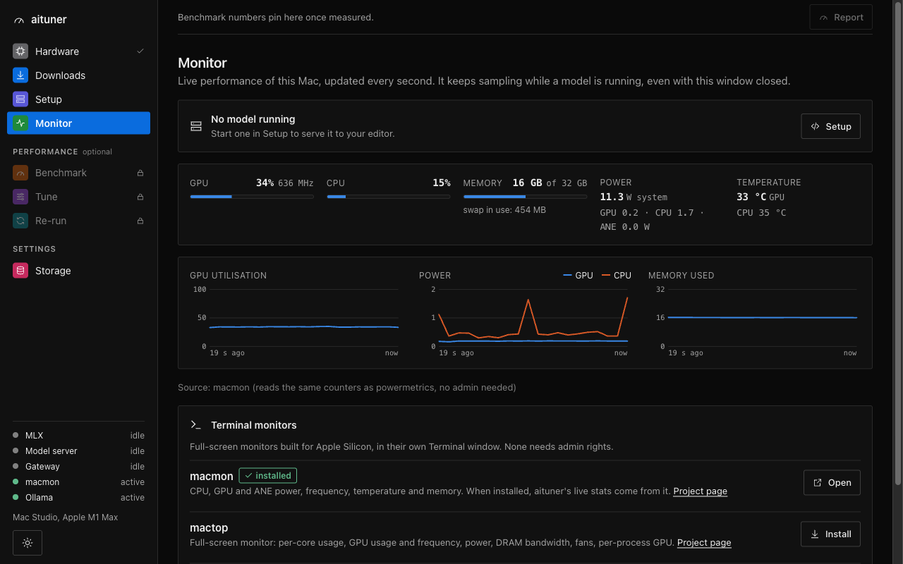

Local AI on your Mac,
tuned and running in minutes.
aituner scans your Mac, recommends models that actually fit it, downloads and runs them with MLX, connects your editor, and shows the GPU working live. A native Mac app with a menu bar monitor. Everything stays on your Mac.
The first signed release is on its way: the install command and download work as soon as it is published. Until then, build it from source in two commands.
$ brew install --cask tonynv/tap/aituner
Everything local AI needs, in one app
From the first launch to a model answering in your editor, measured on your own hardware and never guessed.
Hardware scan
Every launch opens with a live scan of the chip, CPU and GPU cores, unified memory, storage, power, thermals and installed runtimes, read directly from macOS.
Models that fit
Ranked by canirun.ai, resolved to Apple Silicon (MLX) builds on Hugging Face, and sized against your real GPU memory budget and KV cache. A download queue fetches weights only, verified and resumable.
Bootstrap in one click
Creates your models, reports and knowledge base folders, and installs MLX and the live-stats tool, all after one confirmation, shown in a terminal view as it happens.
Live monitor
GPU use and frequency, CPU, power, temperature and memory, charted every second, plus a menu bar panel with the live model and GPU. Starts macmon, mactop or nvtop in Terminal if you prefer.
Your editor, connected
Claude Code, VS Code, Neovim, Vim with tmux, or any OpenAI-compatible tool. A local gateway speaks both the OpenAI and Anthropic Messages APIs. Each tool gets an isolated profile: your own settings are never modified.
Benchmark and tune
Optional: memory bandwidth, GPU compute and real LLM speed, a reviewable diff of system changes you approve one by one, and a before/after re-run that separates real gains from noise.
You own the storage
Choose where models, reports and the knowledge base live, open any of them in Finder, and clear what aituner created, with a preview of exactly what goes.
Private by design
Runs on 127.0.0.1 only, with a per-launch token. It talks to canirun.ai and Hugging Face over HTTPS for model data, and nothing else. No account, no telemetry.
A real Mac app
A native window with a System Settings-style sidebar, a menu bar panel, dark and light modes. In narrow windows and on touch screens the interface switches to a tab bar, sheets and large titles.


Install
Homebrew
Recommended. Updates with brew upgrade.
brew install --cask tonynv/tap/aitunerDownload
Get aituner-<version>.dmg from the latest release, open it and drag aituner to Applications. Checksums are in SHA256SUMS.
From source
Needs Homebrew and the Xcode Command Line Tools. The script installs Go, Node and Python if missing.
git clone https://github.com/tonynv/aituner
cd aituner && ./build_app.sh --installKeep it in the Dock: right-click its icon, Options, Keep in Dock. To update: brew upgrade --cask aituner. To remove it and its app data: brew uninstall --cask --zap aituner (your downloaded models stay in your models folder).
Getting started
About ten minutes, most of it the model download.
- Open aitunerThe scan runs and shows what your Mac has. The Hardware page shows your Mac, its chip, memory and the GPU memory budget models can use.
- BootstrapIn Setup, press Bootstrap. It lists the folders it will create and what it will install (MLX, and macmon for live stats), and does it after you confirm. Change the folders in Storage first if you want them elsewhere.
- Pick a modelIn Downloads, each model shows how it fits your memory: weights, runtime, and the room left for context. Add one to the queue; it downloads in the background.
- Start itIn Setup, choose the model and start it. aituner switches to Monitor, where you watch it load and the GPU work.
- Connect your editorBack in Setup, choose a tool. aituner shows exactly what it will install and change, asks once, then sets it up with its own profile and opens it on your project.
- Close the windowaituner keeps running in the menu bar, and so does your model. Click the gauge icon for the live model and GPU; Quit stops everything cleanly.
Editors and tools
The model runs in mlx_lm.server on an internal port. Editors talk to aituner's gateway on 127.0.0.1:8747, which needs an API key and only forwards a safe set of request fields.
| Tool | What Set up does |
|---|---|
| Claude Code | An aituner-claude launcher that points one session at the gateway; ~/.claude is untouched. Runs lean by default, so the first reply takes seconds. |
| VS Code | An isolated profile with Continue and the Claude Code extension, launched as aituner-code. |
| Neovim | Its own NVIM_APPNAME profile with lazy.nvim and CodeCompanion, launched as aituner-nvim. |
| Vim + tmux | Homebrew Vim with vim-ai, in a tmux layout with a chat pane and the model log. Your ~/.vimrc is read, never written. |
| Anything OpenAI-compatible | Connection details and a key file for Continue, Cline, Aider, Open WebUI, scripts or curl. |
Anthropic does not support routing Claude Code to non-Claude models. The gateway makes it work: it understands the tool-call formats of Llama, Qwen and gpt-oss and repairs tool arguments against their schemas. Larger coding models work best.
See the GPU work
With macmon installed (Bootstrap does it, no admin needed), Monitor shows GPU use and frequency, CPU, CPU/GPU/ANE power, temperatures, memory and swap, from the same counters powermetrics reads. Without it, a built-in sampler shows GPU use and memory.

What it changes on your Mac
Only what you approve, and each change can be reverted from the app.
| Change | Needs admin | Lasts |
|---|---|---|
GPU wired memory limit (iogpu.wired_limit_mb), offered only when it gains at least 1 GiB over what macOS already allows | yes, the standard macOS prompt | until restart, or opt in to keep it |
| Ollama flash attention and 8-bit KV cache | no | until logout, or opt in to keep it |
| Folders for models, reports and the knowledge base (Bootstrap) | no | until you delete them |
| MLX in a private Python environment inside aituner's app data | no | until you remove aituner's app data |
Tuning is judged by the re-run: a change that does not help is reported as such.
Security model
aituner can change system settings, so its local server is locked down.
- Listens on
127.0.0.1only. A random 256-bit session token per launch is exchanged once for an HttpOnly, SameSite=Strict cookie; every API call needs it. - Host allow-list against DNS rebinding, Origin check on every change, a strict Content Security Policy, no CORS.
- The API accepts change keys only. Values are recomputed from measurements, and privileged scripts are built from constants and checked against a character allow-list.
- Outbound traffic goes only to canirun.ai and huggingface.co over HTTPS, with timeouts, size caps and retries.
- Downloads fetch safetensors, config and tokenizer files only, never
*.pyor pickles;trust_remote_codeis never enabled. - App data lives in a 0700 folder; database, lock, logs and cached images are 0600. State-changing requests are audit-logged.
Questions
Which Macs does it support?
Apple Silicon Macs (M1 and later) on macOS 14 or later. MLX runs on the Apple GPU through Metal, which Intel Macs do not have.
Does anything leave my Mac?
Model data: aituner asks canirun.ai which models suit your hardware and Hugging Face for MLX builds and file lists, then downloads the model you choose. Your prompts, code and results stay on your Mac. There is no account and no telemetry.
Where are my files?
Models go to ~/Models, saved reports to ~/Reports, the knowledge base to ~/KnowledgeBase; change any of them in Storage. Run history, settings and logs are in ~/Library/Application Support/aituner.
Can I use it without the app window?
Yes. Closing the window keeps aituner and a running model going in the menu bar. From source, ./run_aituner.sh runs it from a terminal with a text interface and your browser.
How do I remove everything?
brew uninstall --cask --zap aituner removes the app and its app data. If you kept a tuning change across restarts, revert it in the app first. Downloaded models stay in your models folder until you delete them (Storage can clear them).